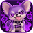

Doku-Chiwawa
投稿前チェック · 6軸ローカル推論
▧GIF☻⌖
0 / 280
モデル未使用。初回評価時にHugging Faceから取得します。
6軸は連続スコアです。0.50はDoku-Chiwawa内の暫定分類閾値で、校正済み確率ではありません。targetedness は毒性そのものではないため分類・グラフから除外しています。

投稿前チェック · 6軸ローカル推論
6軸は連続スコアです。0.50はDoku-Chiwawa内の暫定分類閾値で、校正済み確率ではありません。targetedness は毒性そのものではないため分類・グラフから除外しています。